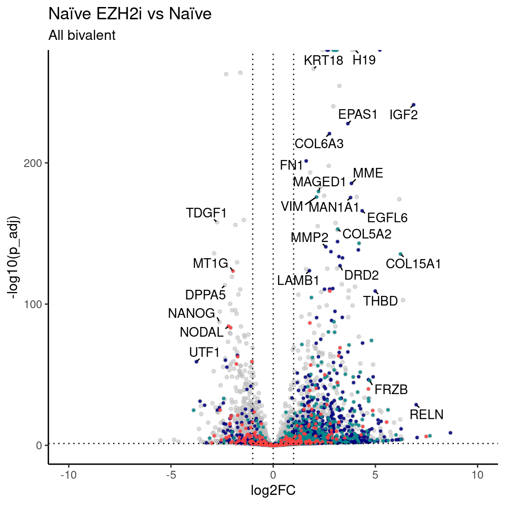
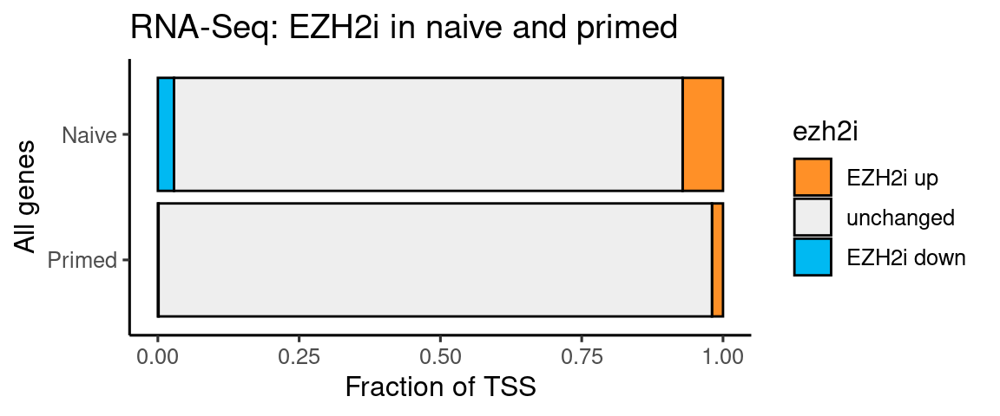
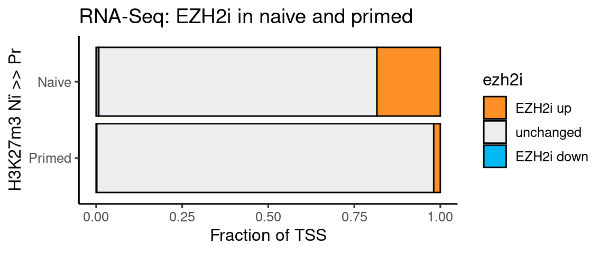
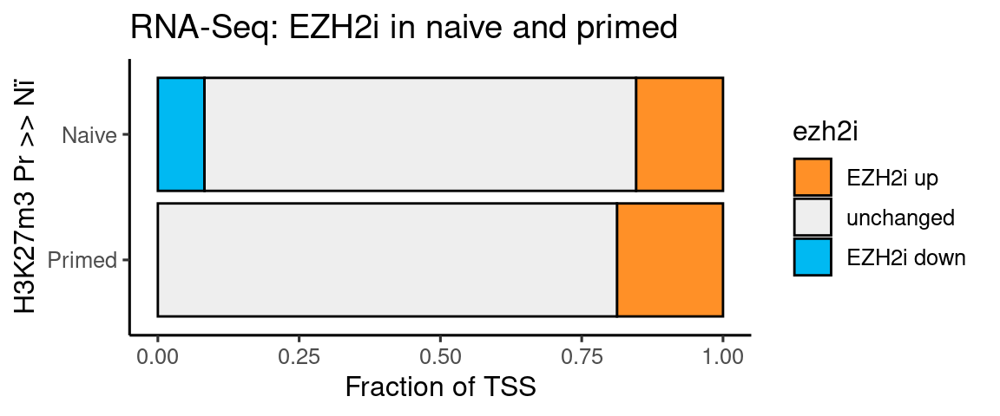
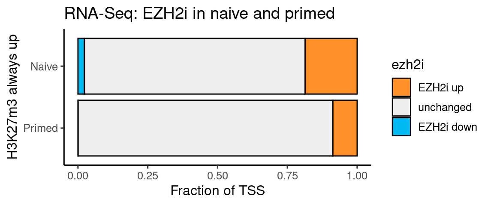
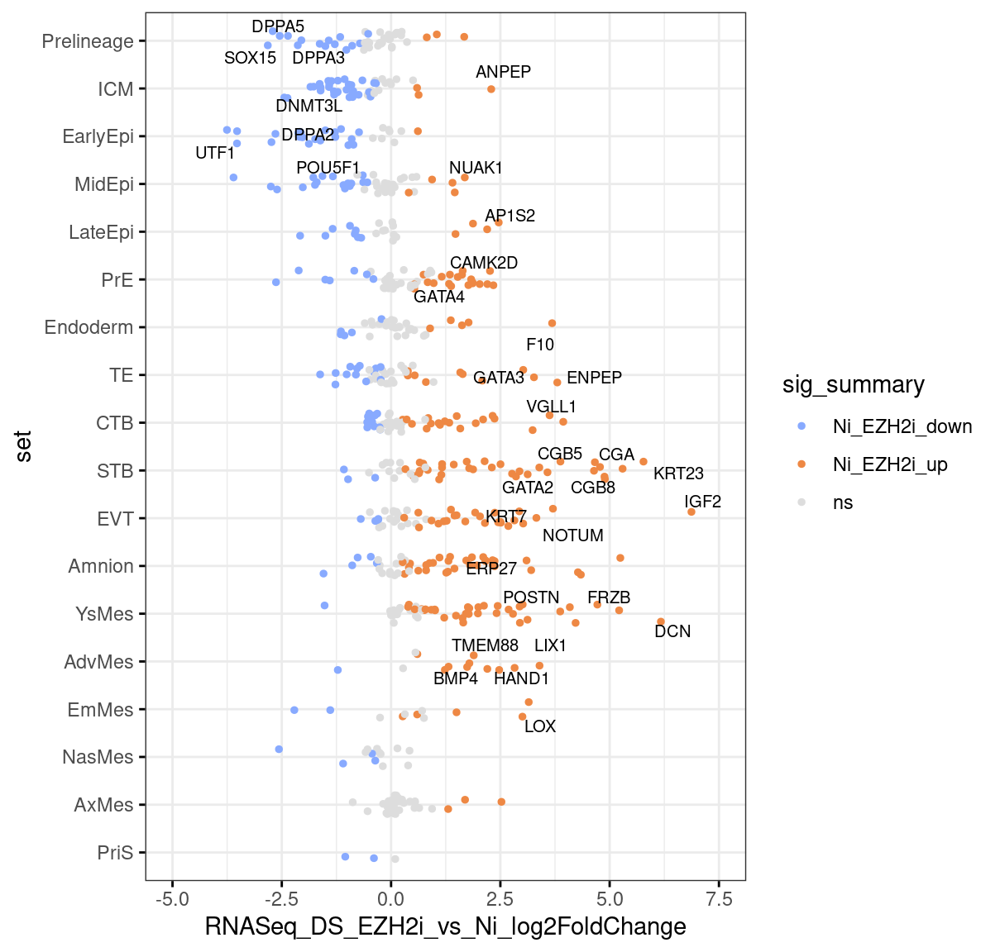

Last updated: 2022-02-05
Checks: 7 0
Knit directory: hesc-epigenomics/
This reproducible R Markdown analysis was created with workflowr (version 1.6.2). The Checks tab describes the reproducibility checks that were applied when the results were created. The Past versions tab lists the development history.
Great! Since the R Markdown file has been committed to the Git repository, you know the exact version of the code that produced these results.
Great job! The global environment was empty. Objects defined in the global environment can affect the analysis in your R Markdown file in unknown ways. For reproduciblity it’s best to always run the code in an empty environment.
The command set.seed(20210202) was run prior to running the code in the R Markdown file. Setting a seed ensures that any results that rely on randomness, e.g. subsampling or permutations, are reproducible.
Great job! Recording the operating system, R version, and package versions is critical for reproducibility.
Nice! There were no cached chunks for this analysis, so you can be confident that you successfully produced the results during this run.
Great job! Using relative paths to the files within your workflowr project makes it easier to run your code on other machines.
Great! You are using Git for version control. Tracking code development and connecting the code version to the results is critical for reproducibility.
The results in this page were generated with repository version abf1e60. See the Past versions tab to see a history of the changes made to the R Markdown and HTML files.
Note that you need to be careful to ensure that all relevant files for the analysis have been committed to Git prior to generating the results (you can use wflow_publish or wflow_git_commit). workflowr only checks the R Markdown file, but you know if there are other scripts or data files that it depends on. Below is the status of the Git repository when the results were generated:
Ignored files:
Ignored: .Rhistory
Ignored: .Rproj.user/
Ignored: output/
Untracked files:
Untracked: data
Untracked: data_old/
Untracked: figures_data/
Unstaged changes:
Deleted: data/meta/Kumar_2020_scaling_groups.csv
Deleted: data/meta/Kumar_2020_scalinginfo.csv
Deleted: data/meta/Kumar_2020_stats_summary.csv
Note that any generated files, e.g. HTML, png, CSS, etc., are not included in this status report because it is ok for generated content to have uncommitted changes.
These are the previous versions of the repository in which changes were made to the R Markdown (analysis/fig_03_ezh2i_expression.Rmd) and HTML (docs/fig_03_ezh2i_expression.html) files. If you’ve configured a remote Git repository (see ?wflow_git_remote), click on the hyperlinks in the table below to view the files as they were in that past version.
| File | Version | Author | Date | Message |
|---|---|---|---|---|
| html | 4922841 | C. Navarro | 2022-02-05 | Build site. |
| Rmd | b2e62f9 | C. Navarro | 2022-02-05 | wflow_publish(“./analysis/fig_03_ezh2i_expression.Rmd”, verbose = T) |
| html | 5716029 | C. Navarro | 2022-02-04 | Build site. |
| Rmd | 0fa7154 | C. Navarro | 2022-02-04 | fig3 expression |
This is the supplementary notebook for figure 3.
gene_list <- c("IGF2", "EPAS1", "GATA2", "FMN", "RELN", "FRZB", "WNT2", "H19",
"KRT18", "HAND1", "UTF1", "FGF4", "DPPA2", "NANOG", "ZNF157", "TDGF1",
"DPPA5", "NODAL", "EPAS1", "IGF2", "MME", "GATA2", "PITX1", "HAND1",
"MAN1A1", "LAMB1", "SLC7A2", "DRD2", "KCTD12", "MMP2", "COLEC12", "THBD",
"ADAMTS1", "CD99", "EGFL6", "COL5A2", "VCAN", "COL15A1", "VIM", "CCKBR",
"MAGED1", "FN1", "COL6A3", "ADGRA2", "MT1G")
to_plot <- genes %>% mutate(color = case_when(
RNASeq_DS_EZH2i_vs_Ni_padj < p_cutoff & RNASeq_DS_EZH2i_vs_Ni_log2FoldChange < -fc_cutoff ~ "#555555",
RNASeq_DS_EZH2i_vs_Ni_padj < p_cutoff & RNASeq_DS_EZH2i_vs_Ni_log2FoldChange > fc_cutoff ~ "#555555",
TRUE ~ "darkgray")) %>%
mutate(label = ifelse(name %in% gene_list & color != "darkgray", name, "")) %>%
filter(!is.na(RNASeq_DS_EZH2i_vs_Ni_log2FoldChange) & !is.na(RNASeq_DS_EZH2i_vs_Ni_padj))
subset_up <- to_plot %>% filter(k27_bivalency_grp == "Always_up")
subset_ni <- to_plot %>% filter(k27_bivalency_grp == "Ni_higher_than_Pr")
subset_pr <- to_plot %>% filter(k27_bivalency_grp == "Pr_higher_than_Ni")
ggplot(to_plot, aes(x = RNASeq_DS_EZH2i_vs_Ni_log2FoldChange, y = -log10(RNASeq_DS_EZH2i_vs_Ni_padj), label = label)) +
rasterise(geom_point(alpha = 0.5, size = 1, color ="gray"), dpi=300) +
rasterise(geom_point(data = subset_up, color = "navy", size = 0.5, alpha = 0.8), dpi=300) +
rasterise(geom_point(data = subset_ni, color = "cyan4", size = 0.5, alpha = 0.8), dpi=300) +
rasterise(geom_point(data = subset_pr, color = "brown1", size = 0.5, alpha = 0.8), dpi=300) +
geom_vline(xintercept = c(0, -fc_cutoff, fc_cutoff), linetype = "dotted") +
geom_hline(yintercept = -log10(p_cutoff), linetype = "dotted") +
labs(x = "log2FC", y = "-log10(p_adj)", title = "Naïve EZH2i vs Naïve", subtitle = "All bivalent") +
scale_color_identity() +
geom_text_repel(min.segment.length = 0, box.padding = 0.2) +
coord_cartesian(xlim = c(-10, 10)) + theme_default()Warning: ggrepel: 15 unlabeled data points (too many overlaps). Consider
increasing max.overlaps
t <- rbind(genes %>% mutate(
ezh2i = factor(case_when(
RNASeq_DS_EZH2i_vs_Ni_padj < p_cutoff & RNASeq_DS_EZH2i_vs_Ni_log2FoldChange > fc_cutoff ~ "EZH2i up",
RNASeq_DS_EZH2i_vs_Ni_padj < p_cutoff & RNASeq_DS_EZH2i_vs_Ni_log2FoldChange < -fc_cutoff ~ "EZH2i down",
TRUE ~ "unchanged")
)) %>% dplyr::count(ezh2i) %>% mutate(type = "Naive"),
genes %>% mutate(
ezh2i = factor(case_when(
RNASeq_DS_EZH2i_vs_Pr_padj < p_cutoff & RNASeq_DS_EZH2i_vs_Pr_log2FoldChange > fc_cutoff ~ "EZH2i up",
RNASeq_DS_EZH2i_vs_Pr_padj < p_cutoff & RNASeq_DS_EZH2i_vs_Pr_log2FoldChange < -fc_cutoff ~ "EZH2i down",
TRUE ~ "unchanged")
)) %>% dplyr::count(ezh2i) %>% mutate(type = "Primed"))
t$ezh2i <- factor(t$ezh2i, levels = c("EZH2i up", "unchanged", "EZH2i down"))
t$type <- factor(t$type, levels = c("Primed", "Naive"))
ggplot(t, aes(x=type, y=n, fill=ezh2i)) +
geom_bar(stat="identity", position = "fill", color = "black") +
theme_default() +
scale_fill_manual(values = c("#ff9027", "#eeeeee", "#00b9f2" )) +
coord_flip() + labs(y = "Fraction of TSS", x = "All genes", title = "RNA-Seq: EZH2i in naive and primed")
t <- rbind(genes %>% filter(k27_bivalency_grp == "Ni_higher_than_Pr") %>% mutate(
ezh2i = factor(case_when(
RNASeq_DS_EZH2i_vs_Ni_padj < p_cutoff & RNASeq_DS_EZH2i_vs_Ni_log2FoldChange > fc_cutoff ~ "EZH2i up",
RNASeq_DS_EZH2i_vs_Ni_padj < p_cutoff & RNASeq_DS_EZH2i_vs_Ni_log2FoldChange < -fc_cutoff ~ "EZH2i down",
TRUE ~ "unchanged")
)) %>% dplyr::count(ezh2i) %>% mutate(type = "Naive"),
genes %>% filter(k27_bivalency_grp == "Ni_higher_than_Pr") %>% mutate(
ezh2i = factor(case_when(
RNASeq_DS_EZH2i_vs_Pr_padj < p_cutoff & RNASeq_DS_EZH2i_vs_Pr_log2FoldChange > fc_cutoff ~ "EZH2i up",
RNASeq_DS_EZH2i_vs_Pr_padj < p_cutoff & RNASeq_DS_EZH2i_vs_Pr_log2FoldChange < -fc_cutoff ~ "EZH2i down",
TRUE ~ "unchanged")
)) %>% dplyr::count(ezh2i) %>% mutate(type = "Primed"))
t$ezh2i <- factor(t$ezh2i, levels = c("EZH2i up", "unchanged", "EZH2i down"))
t$type <- factor(t$type, levels = c("Primed", "Naive"))
ggplot(t, aes(x=type, y=n, fill=ezh2i)) +
geom_bar(stat="identity", position = "fill", color = "black") +
theme_default() +
scale_fill_manual(values = c("#ff9027", "#eeeeee", "#00b9f2" )) +
coord_flip() + labs(y = "Fraction of TSS", x = "H3K27m3 Nï >> Pr", title = "RNA-Seq: EZH2i in naive and primed")
| Version | Author | Date |
|---|---|---|
| 5716029 | C. Navarro | 2022-02-04 |
t <- rbind(genes %>% filter(k27_bivalency_grp == "Pr_higher_than_Ni") %>% mutate(
ezh2i = factor(case_when(
RNASeq_DS_EZH2i_vs_Ni_padj < p_cutoff & RNASeq_DS_EZH2i_vs_Ni_log2FoldChange > fc_cutoff ~ "EZH2i up",
RNASeq_DS_EZH2i_vs_Ni_padj < p_cutoff & RNASeq_DS_EZH2i_vs_Ni_log2FoldChange < -fc_cutoff ~ "EZH2i down",
TRUE ~ "unchanged")
)) %>% dplyr::count(ezh2i) %>% mutate(type = "Naive"),
genes %>% filter(k27_bivalency_grp == "Pr_higher_than_Ni") %>% mutate(
ezh2i = factor(case_when(
RNASeq_DS_EZH2i_vs_Pr_padj < p_cutoff & RNASeq_DS_EZH2i_vs_Pr_log2FoldChange > fc_cutoff ~ "EZH2i up",
RNASeq_DS_EZH2i_vs_Pr_padj < p_cutoff & RNASeq_DS_EZH2i_vs_Pr_log2FoldChange < -fc_cutoff ~ "EZH2i down",
TRUE ~ "unchanged")
)) %>% dplyr::count(ezh2i) %>% mutate(type = "Primed"))
t$ezh2i <- factor(t$ezh2i, levels = c("EZH2i up", "unchanged", "EZH2i down"))
t$type <- factor(t$type, levels = c("Primed", "Naive"))
ggplot(t, aes(x=type, y=n, fill=ezh2i)) +
geom_bar(stat="identity", position = "fill", color = "black") +
theme_default() +
scale_fill_manual(values = c("#ff9027", "#eeeeee", "#00b9f2" )) +
coord_flip() + labs(y = "Fraction of TSS", x = "H3K27m3 Pr >> Nï",
title = "RNA-Seq: EZH2i in naive and primed")
t <- rbind(genes %>% filter(k27_bivalency_grp == "Always_up") %>% mutate(
ezh2i = factor(case_when(
RNASeq_DS_EZH2i_vs_Ni_padj < p_cutoff & RNASeq_DS_EZH2i_vs_Ni_log2FoldChange > fc_cutoff ~ "EZH2i up",
RNASeq_DS_EZH2i_vs_Ni_padj < p_cutoff & RNASeq_DS_EZH2i_vs_Ni_log2FoldChange < -fc_cutoff ~ "EZH2i down",
TRUE ~ "unchanged")
)) %>% dplyr::count(ezh2i) %>% mutate(type = "Naive"),
genes %>% filter(k27_bivalency_grp == "Always_up") %>% mutate(
ezh2i = factor(case_when(
RNASeq_DS_EZH2i_vs_Pr_padj < p_cutoff & RNASeq_DS_EZH2i_vs_Pr_log2FoldChange > fc_cutoff ~ "EZH2i up",
RNASeq_DS_EZH2i_vs_Pr_padj < p_cutoff & RNASeq_DS_EZH2i_vs_Pr_log2FoldChange < -fc_cutoff ~ "EZH2i down",
TRUE ~ "unchanged")
)) %>% dplyr::count(ezh2i) %>% mutate(type = "Primed"))
t$ezh2i <- factor(t$ezh2i, levels = c("EZH2i up", "unchanged", "EZH2i down"))
t$type <- factor(t$type, levels = c("Primed", "Naive"))
ggplot(t, aes(x=type, y=n, fill=ezh2i)) +
geom_bar(stat="identity", position = "fill", color = "black") +
theme_default() +
scale_fill_manual(values = c("#ff9027", "#eeeeee", "#00b9f2" )) +
coord_flip() + labs(y = "Fraction of TSS", x = "H3K27m3 always up",
title = "RNA-Seq: EZH2i in naive and primed")
gr_annot <- genes %>% mutate(
EZH2i = factor(case_when(
RNASeq_DS_EZH2i_vs_Ni_padj < p_cutoff & RNASeq_DS_EZH2i_vs_Ni_log2FoldChange > fc_cutoff & RNASeq_DS_EZH2i_vs_Pr_padj < p_cutoff & RNASeq_DS_EZH2i_vs_Pr_log2FoldChange > fc_cutoff ~ "EZH2i both up",
RNASeq_DS_EZH2i_vs_Ni_padj < p_cutoff & RNASeq_DS_EZH2i_vs_Ni_log2FoldChange > fc_cutoff ~ "EZH2i Ni Up",
RNASeq_DS_EZH2i_vs_Pr_padj < p_cutoff & RNASeq_DS_EZH2i_vs_Pr_log2FoldChange > fc_cutoff ~ "EZH2i Pr Up",
TRUE ~ "None")
))
dplyr::count(gr_annot, EZH2i, k27_bivalency_grp) EZH2i k27_bivalency_grp n
1 EZH2i both up Always_up 102
2 EZH2i both up K4_only 12
3 EZH2i both up Ni_higher_than_Pr 10
4 EZH2i both up None 14
5 EZH2i both up Pr_higher_than_Ni 31
6 EZH2i Ni Up Always_up 533
7 EZH2i Ni Up K4_only 653
8 EZH2i Ni Up Ni_higher_than_Pr 276
9 EZH2i Ni Up None 212
10 EZH2i Ni Up Pr_higher_than_Ni 51
11 EZH2i Pr Up Always_up 196
12 EZH2i Pr Up K4_only 37
13 EZH2i Pr Up Ni_higher_than_Pr 20
14 EZH2i Pr Up None 27
15 EZH2i Pr Up Pr_higher_than_Ni 69
16 None Always_up 2572
17 None K4_only 11688
18 None Ni_higher_than_Pr 1245
19 None None 8355
20 None Pr_higher_than_Ni 382tbl <- genes
tbl <- tbl[!duplicated(tbl$name),]
tbl <- genes %>% mutate(
sig_summary = case_when(
RNASeq_DS_EZH2i_vs_Ni_log2FoldChange > 0 & RNASeq_DS_EZH2i_vs_Ni_padj < 0.05 ~ "Ni_EZH2i_up",
RNASeq_DS_EZH2i_vs_Ni_log2FoldChange < -0 & RNASeq_DS_EZH2i_vs_Ni_padj < 0.05 ~ "Ni_EZH2i_down",
TRUE ~ "ns"),
sig_summary_pr = case_when(
RNASeq_DS_EZH2i_vs_Pr_log2FoldChange > 0 & RNASeq_DS_EZH2i_vs_Pr_padj < 0.05 ~ "Pr_EZH2i_up",
RNASeq_DS_EZH2i_vs_Pr_log2FoldChange < -0 & RNASeq_DS_EZH2i_vs_Pr_padj < 0.05 ~ "Pr_EZH2i_down",
TRUE ~ "ns"))
markers <- read.table('./data/lineagemarker_genes.csv',sep="\t",header=T)
marker.sets <- markers$set
names(marker.sets) <- markers$gene
marker.tbl <- inner_join(select(tbl, "name",
"sig_summary","sig_summary_pr", contains("Log2FoldChange") & contains("RNASeq")),
markers, by = c("name" = "gene"))
goi <- c("GATA3","GATA2","TP63","CGA","CGB","CGB8","CGB5","POU5F1","DPPA3",
"VGLL1","BMP4","VIM","DPPA2","NANOG","SOX2","FGF4","TFAP2C","KRT7",
"ENPEP","IGF2","FRZB","ERP27","KRT23","DNMT3A","DNMT3L","XAGE2","HAND1",
"KRT18","KLF6","NUAK2","EPAS1", "SLC40A1","CLDN4","DCN","NOTUM","CAMK2D",
"AP1S2","ANPEP","NUAK1","UTF1","SOX15","DPPA3","DPPA5","GATA4","NR2F2",
"CDX1","T","TBXT","MIXL1","LIX1","TMEM28","ANXA1","POSTN","TBXT", "LOX",
"GATA4","LDH","TMEM88", "TBXT", "F10")
marker.tbl$set[marker.tbl$set=="Early"]<-"Prelineage"
marker.tbl$set[marker.tbl$set=="PE"]<-"PrE"
marker.tbl$set <- factor(marker.tbl$set, levels=
c("Prelineage","ICM","EarlyEpi","MidEpi","Early/Mid Epi","LateEpi","PrE",
"Endoderm","TE","CTB","STB","EVT","Amnion","YsMes","AdvMes","EmMes","NasMes",
"AxMes","PriS")
)
#remove groups: Early/Mid Epi redundant with Early and Mid as separate groups; mesoderms not well defined, PriS three markers only
marker.tbl <- marker.tbl[! marker.tbl$set %in% c("Early/Mid Epi"), ]
ggstripchart(marker.tbl,x="set",y="RNASeq_DS_EZH2i_vs_Ni_log2FoldChange",
orientation="horizontal",
color = "sig_summary",
palette=c("#88AAFF","#EE8844","#DDDDDD"),
size = 1, jitter=0.2,
ggtheme=theme_bw(),
label="name", font.label = list(size = 8), repel=T,
label.select = goi, label.rectangle = F, ) +
scale_x_discrete(limits=rev) + scale_y_continuous(limits=c(-5,7.5))Warning: Removed 23 rows containing missing values (geom_point).
sessionInfo()R version 4.1.2 (2021-11-01)
Platform: x86_64-pc-linux-gnu (64-bit)
Running under: Ubuntu 20.04.3 LTS
Matrix products: default
BLAS: /usr/lib/x86_64-linux-gnu/openblas-pthread/libblas.so.3
LAPACK: /usr/lib/x86_64-linux-gnu/openblas-pthread/liblapack.so.3
locale:
[1] LC_CTYPE=en_US.UTF-8 LC_NUMERIC=C
[3] LC_TIME=sv_SE.UTF-8 LC_COLLATE=en_US.UTF-8
[5] LC_MONETARY=sv_SE.UTF-8 LC_MESSAGES=en_US.UTF-8
[7] LC_PAPER=sv_SE.UTF-8 LC_NAME=C
[9] LC_ADDRESS=C LC_TELEPHONE=C
[11] LC_MEASUREMENT=sv_SE.UTF-8 LC_IDENTIFICATION=C
attached base packages:
[1] stats4 stats graphics grDevices utils datasets methods
[8] base
other attached packages:
[1] svglite_2.0.0 heatmaply_1.3.0
[3] viridis_0.6.2 viridisLite_0.4.0
[5] plotly_4.10.0 wigglescout_0.13.5
[7] ggpubr_0.4.0 ggrepel_0.9.1
[9] cowplot_1.1.1 DESeq2_1.34.0
[11] SummarizedExperiment_1.24.0 Biobase_2.54.0
[13] MatrixGenerics_1.6.0 matrixStats_0.61.0
[15] ggrastr_0.2.3 forcats_0.5.1
[17] stringr_1.4.0 dplyr_1.0.7
[19] purrr_0.3.4 readr_2.1.0
[21] tidyr_1.1.4 tibble_3.1.6
[23] ggplot2_3.3.5 tidyverse_1.3.1
[25] rtracklayer_1.54.0 GenomicRanges_1.46.0
[27] GenomeInfoDb_1.30.0 IRanges_2.28.0
[29] S4Vectors_0.32.2 BiocGenerics_0.40.0
[31] workflowr_1.6.2
loaded via a namespace (and not attached):
[1] readxl_1.3.1 backports_1.3.0 systemfonts_1.0.3
[4] plyr_1.8.6 lazyeval_0.2.2 splines_4.1.2
[7] BiocParallel_1.28.0 listenv_0.8.0 digest_0.6.28
[10] foreach_1.5.1 htmltools_0.5.2 fansi_0.5.0
[13] magrittr_2.0.1 memoise_2.0.0 tzdb_0.2.0
[16] globals_0.14.0 Biostrings_2.62.0 annotate_1.72.0
[19] modelr_0.1.8 colorspace_2.0-2 blob_1.2.2
[22] rvest_1.0.2 haven_2.4.3 xfun_0.28
[25] crayon_1.4.2 RCurl_1.98-1.5 jsonlite_1.7.2
[28] genefilter_1.76.0 iterators_1.0.13 survival_3.2-13
[31] glue_1.5.1 registry_0.5-1 gtable_0.3.0
[34] zlibbioc_1.40.0 XVector_0.34.0 webshot_0.5.2
[37] DelayedArray_0.20.0 car_3.0-12 abind_1.4-5
[40] scales_1.1.1 DBI_1.1.1 rstatix_0.7.0
[43] Rcpp_1.0.7 xtable_1.8-4 bit_4.0.4
[46] htmlwidgets_1.5.4 httr_1.4.2 RColorBrewer_1.1-2
[49] ellipsis_0.3.2 farver_2.1.0 pkgconfig_2.0.3
[52] XML_3.99-0.8 sass_0.4.0 dbplyr_2.1.1
[55] locfit_1.5-9.4 utf8_1.2.2 labeling_0.4.2
[58] tidyselect_1.1.1 rlang_0.4.12 reshape2_1.4.4
[61] later_1.3.0 AnnotationDbi_1.56.2 munsell_0.5.0
[64] cellranger_1.1.0 tools_4.1.2 cachem_1.0.6
[67] cli_3.1.0 generics_0.1.1 RSQLite_2.2.8
[70] broom_0.7.10 evaluate_0.14 fastmap_1.1.0
[73] yaml_2.2.1 knitr_1.36 bit64_4.0.5
[76] fs_1.5.0 dendextend_1.15.2 KEGGREST_1.34.0
[79] future_1.23.0 whisker_0.4 xml2_1.3.2
[82] compiler_4.1.2 rstudioapi_0.13 beeswarm_0.4.0
[85] png_0.1-7 ggsignif_0.6.3 reprex_2.0.1
[88] geneplotter_1.72.0 bslib_0.3.1 stringi_1.7.6
[91] highr_0.9 lattice_0.20-45 Matrix_1.4-0
[94] vctrs_0.3.8 pillar_1.6.4 lifecycle_1.0.1
[97] furrr_0.2.3 jquerylib_0.1.4 data.table_1.14.2
[100] bitops_1.0-7 seriation_1.3.1 httpuv_1.6.3
[103] R6_2.5.1 BiocIO_1.4.0 TSP_1.1-11
[106] promises_1.2.0.1 gridExtra_2.3 vipor_0.4.5
[109] parallelly_1.28.1 codetools_0.2-18 assertthat_0.2.1
[112] rprojroot_2.0.2 rjson_0.2.20 withr_2.4.2
[115] GenomicAlignments_1.30.0 Rsamtools_2.10.0 GenomeInfoDbData_1.2.7
[118] parallel_4.1.2 hms_1.1.1 grid_4.1.2
[121] rmarkdown_2.11 carData_3.0-4 Cairo_1.5-12.2
[124] git2r_0.28.0 lubridate_1.8.0 ggbeeswarm_0.6.0
[127] restfulr_0.0.13